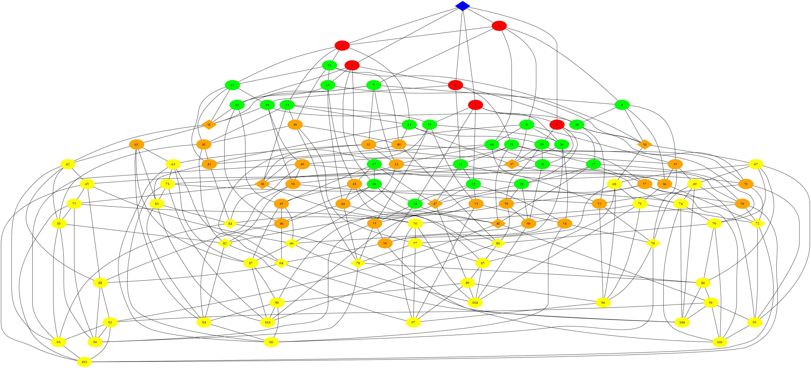

CSci 49384: Algorithms for Tree Distributions
Department of Computer Science
Hunter College, City University of New York
Fall 2022
TL;DR: Hands-on algorithms seminar with coding, design, group work, and presentations.

FAQ's:
- How can I find out more about this seminar?
First, read through the questions below. If you have additional questions, write to trees AT hunter cuny edu.
- When/where does the course meet?
Wednesdays, 10am-12:30pm, from 31 August to 7 December (due to CUNY holiday schedule, there is no class 5 October). The course will be in-person with the occassional hybrid session when we have outside speakers.
- What are the prerequisites?
The prequisites are CSci 265 and 335.
- I haven't taken the prerequisites, can I still take the course?
Probably not. We're going to design and implement algorithms. To contribute (and pass) the course, you need mastery of the canonical data structures and algorithms taught in the programming sequence (through CSci 335), as well as competency with complexity classes (from CSci 265). If you are a graduate student or have mastered the material elsewhere and would like permission to enroll, write to trees AT hunter cuny edu.
- Are there really no exams or quizzes?
Yes, there are no exams or quizzes. Instead, there's regular presentations of technical papers as well the code you're writing.
- Does attendance matter?
Yes. As a research methods seminar, participation is integral to the course. Missing the weekly class means that you miss the discussions and design groupwork. There will be occasional hybrid sessions when we have outside speakers. Also, since many students will be seniors and will have conflicts with job interviews, we will set up on-line participation links to minimize missed classes when interview season starts.
- Is this a theory or applied course?
Yes, it's both a theory and an applied course. We will first design and analyze algorithms. And then, we will implement those algorithms.
- Do we have to code?
Yes. We will be primarily coding in Python 3.6+.
- I don't know Python, can I still enroll for the course?
Yes, but work through How to Think Like a Computer Scientist (the CSci 127 textbook) before the course starts. Since you have completed CSci 335, the concepts, if not the syntax, should be very familiar. In addition to the interactive code challenges in that book, make sure that you can run code in an IDE on your laptop (need to have Python 3.6+ and the standard packages).
- I'm not a Hunter student-- can I take the course?
Maybe. The Hunter computer science department does allows ePermit's. See your home department's advisor for their rules about taking outside courses and details on the process.
- What is a tree?
A tree is a data structure that has a similar structure to a living tree. It has "leaves" (also called tips), and each leaf is connected to internal "nodes" (vertices) by branches (edges). Between any two nodes in the tree, there is only one path of branches that connects them (i.e. the structure is acyclic.)
- What is a tree distribution?
It's a set of trees, often generated by some underlying process. For example, you could have some biological species and are interested in how well a tree captures the evolutionary history of the species. If each possible tree, with leaves labeled by the species, is given a score, we examine the distribution of the trees that score well. The image below shows the 945 unrooted 7-leaf trees shaded by their score and organized by NNI metric (see Urheim et al, 2016 for details):

- What's the image of at the top of the page?
The points are the 6-leaf unrooted trees. There's an edge between two points if they're very similar. For this drawing of treespace, two trees are connected if they differ by a single nearest-neighbor-interchange (more details at St. John, 2016).